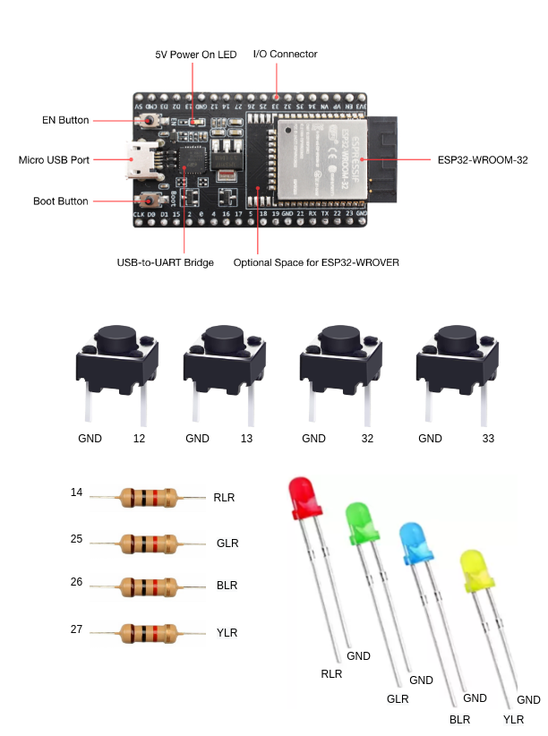
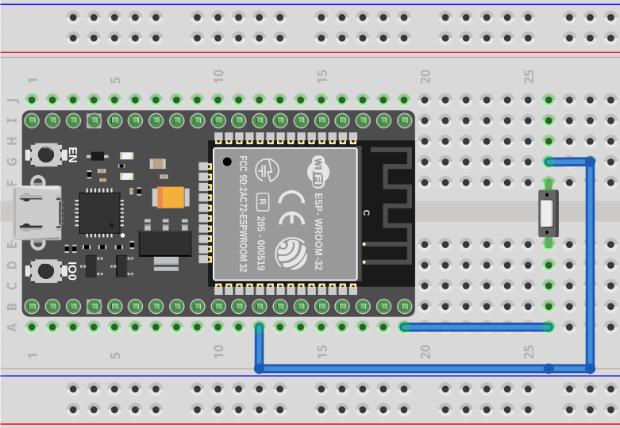
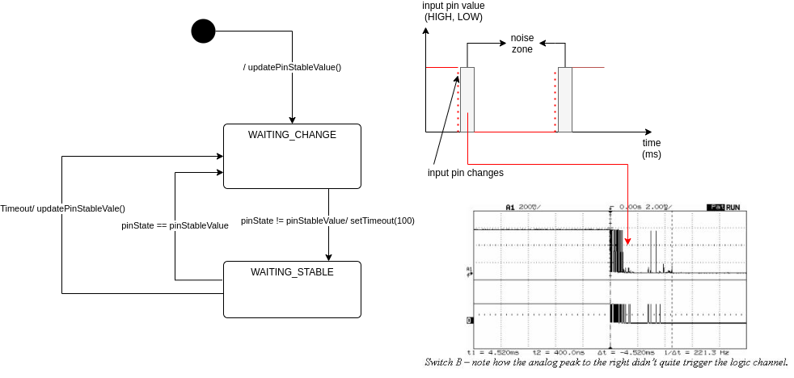
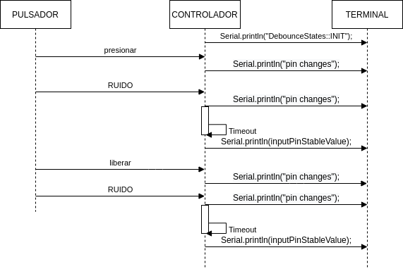

Unidad 1. Software para sistemas embebidos
Introducción
En esta unidad vas a aprender técnicas para programar los sistemas embebidos (controladores) que permitirán capturar y/o generar la información que fluye desde y hacia el mundo exterior de la aplicación interactiva.
Propósito de aprendizaje
Modelar el software del controlador, mediante el uso de máquinas de estado, para poder establecer escenarios que permitan documentar y verificar su funcionamiento.
Implementar el software del controlador mediante las técnicas de programación adecuadas que permitan sacarle el máximo provecho a dicho controlador.
Verificar el software del controlador por medio de la comparación de resultados de funcionamiento con los posibles escenarios o vectores de prueba definidos en el modelado.
Temas
Introducción a la programación NO BLOQUEANTE.
Técnicas de programación: encapsulamiento mediante tareas, programación concurrente.
Modelamiento y programación utilizando máquinas de estado.
Manejo del puerto serial, medidas de tiempo y retardos utilizando técnicas de programación no bloqueantes.
Trayecto de actividades
Ejercicios
Ejercicio 1: introducción
Vamos a revisar entre todos este material introductorio.
Ejercicio 2: ¿Cómo funciona un microcontrolador?
Vamos a revisar esta pregunta juntos en el tablero.
Ejercicio 3: demo del ambiente de trabajo
Te voy a mostrar cómo programar el microcontrolador. Trata de tomar nota porque en el próximo ejercicio lo harás tu mismo.
Ejercicio 4: retrieval practice (evaluación formativa)
Para realizar esta evaluación sigue los siguientes pasos:
Abre el browser, ingresa a Github, cierra la cuenta actual y entra a tu cuenta.
Ingresa a este enlace, busca tu ID y nombre para que puedas ingresar a nuestro GitHub Classroom y acepta la primera evaluación formativa del curso. Espera unos segundos y presiona la tecla F5.
Ahora ingresa al enlace con tu repositorio, despliega el menú del botón Code y selecciona la opción https. Copia la URL.
Abre la terminal y escribe el comando:
cd ~
Ahora clona el repositorio así (cambia las XXX por tu usuario de GitHub o simplemente copia la URL completa de tu repositorio):
git clone https://github.com/jfUPB/simpleproject-XXX.git
Cámbiate al directorio que tiene el repositorio:
cd simpleproject-XXX
Ejecuta el comando:
code .
Este comando abre tu directorio COMPLETO en visual studio code. SIEMPRE debes abrir directorios completos.
Una vez en visual studio code, abre la paleta de comandos con CRTL+SHIFT+P
Escribe el comando Arduino: Initialize (si no te sale, llama al profe).
Y cambia sketch.ino por simpleProject.ino
Selecciona tu microcontrolador. Escribe ESP32 (si tienes uno ESP32) y luego selecciona el ESP32 Dev Module.
Conecta tu sistema de desarrollo del ESP32 a tu computador. Linux debe reconocer el dispositivo y cargar el driver.
En la parte inferior de visual studio code selecciona <Select Programmer> por Esptool y <Select Serial Port> por el puerto serial que el sistema operativo le asignó a tu sistema de desarrollo. Usualmente lo encuentras en la parte final de la lista y es algo similar a /dev/ttyUSB0.
Abre el archivo simpleProject.ino y reemplaza el código que está allí por este:
void setup() { Serial.begin(115200); } void loop() { static uint32_t counter = 0; static uint32_t lasTime = 0; static const uint32_t INTERVAL = 1000; uint32_t currentTime = millis(); if( (currentTime - lasTime) >= INTERVAL){ lasTime = currentTime; Serial.println(counter++); } }
Compila: esquina superior derecha, ícono con el chulo verde.
Graba la memoria de programa del microcontrolador con el código de máquina que resulta del proceso de traducción del programa anterior. Ícono al lado izquierdo del chulo verde.
Abre el Monitor serial y comprueba el resultado (parte inferior ícono con un enchufe).
Regresa a la termina y en el directorio del proyecto escribe (si hay un error, posiblemente tu terminal no está autenticada aún. Llama al profe):
git add --all git commit -m "Test done" git push
Regresa a GitHub y verifica que tu trabajo está en el repositorio.
Ejercicio 5: documentación
Ingresa a la documentación oficial del port de Arduino para el ESP32. No tienes que leer todo, solo te pido que recorras superficialmente para que te hagas una idea de la información que puedes encontrar allí.
Ejercicio 6: RETO montaje
Ahora vas a realizar el siguiente montaje en el protoboard. Si no recuerdas qué es un protoboard o cómo lo puedes trabajar, te dejaré este par de recursos:
{kind=link}
Ejercicio 7: prueba tu montaje
Con este programa vas a verificar que tu montaje esté correcto.
void task1()
{
// Definición de estados y variable de estado
enum class Task1States
{
INIT,
WAIT_TIMEOUT
};
static Task1States task1State = Task1States::INIT;
// Definición de variables static (conservan
// su valor entre llamadas a task1)
static uint32_t lasTime = 0;
// Constantes
constexpr uint32_t INTERVAL = 1000;
constexpr uint8_t button1Pin = 12;
constexpr uint8_t button2Pin = 13;
constexpr uint8_t button3Pin = 32;
constexpr uint8_t button4Pin = 33;
constexpr uint8_t ledRed = 14;
constexpr uint8_t ledGreen = 25;
constexpr uint8_t ledBlue = 26;
constexpr uint8_t ledYellow = 27;
// MÁQUINA de ESTADOS
switch (task1State)
{
case Task1States::INIT:
{
Serial.begin(115200);
pinMode(button1Pin, INPUT_PULLUP);
pinMode(button2Pin, INPUT_PULLUP);
pinMode(button3Pin, INPUT_PULLUP);
pinMode(button4Pin, INPUT_PULLUP);
pinMode(ledRed, OUTPUT);
pinMode(ledGreen, OUTPUT);
pinMode(ledBlue, OUTPUT);
pinMode(ledYellow, OUTPUT);
lasTime = millis();
task1State = Task1States::WAIT_TIMEOUT;
break;
}
case Task1States::WAIT_TIMEOUT:
{
uint8_t btn1State = digitalRead(button1Pin);
uint8_t btn2State = digitalRead(button2Pin);
uint8_t btn3State = digitalRead(button3Pin);
uint8_t btn4State = digitalRead(button4Pin);
uint32_t currentTime = millis();
// Evento 1:
if ((currentTime - lasTime) >= INTERVAL)
{
lasTime = currentTime;
printf("btn1: %d,btn2: %d, btn3: %d, btn4: %d\n", btn1State, btn2State, btn3State, btn4State);
}
// Evento 2
if (btn1State == LOW)
digitalWrite(ledRed, HIGH);
// Evento 3
if (btn2State == LOW)
digitalWrite(ledGreen, HIGH);
// Evento 4
if (btn3State == LOW)
digitalWrite(ledBlue, HIGH);
// Evento 5
if (btn4State == LOW)
digitalWrite(ledYellow, HIGH);
break;
}
default:
{
Serial.println("Error");
}
}
}
void setup()
{
task1();
}
void loop()
{
task1();
}
Te en cuenta lo siguiente:
Los programas los dividiremos en tareas. En este caso solo tenemos una. Las tareas son una manera de distribuir el trabajo para poder realizar el programa en equipo. Lo ideal es que las tareas sean independientes, pero no siempre se logra. Por tanto, será necesario definir mecanismos de comunicación entre ellas. Más adelante te enseño cómo.
Este programa tiene un pseudo estado y un estado, pero desde ahora diremos que tiene 2 estados:
enum class Task1States { INIT, WAIT_TIMEOUT };
¿Qué son los estados? Son condiciones de espera. Son momentos en los cuales tu programa está esperando a que algo ocurra. En este caso en
Task1States::INITrealmente noESPERAMOSnada, por eso decimos que es un pseudo estado. Este estado SIEMPRE lo usaremos para configurar las condiciones INICIALES de tu programa.Nota cómo se pasa de un estado a otro:
task1State = Task1States::WAIT_TIMEOUT;
En el estado Task1States::WAIT_TIMEOUT si estamos esperando a que ocurran varios
EVENTOS. En este caso los eventos los identificamos mediante losIF. Por tanto, en un estado tu programa estará siempre preguntando por la ocurrencia de algunos eventos.Cuando la condición de un evento se produce entonces tu programa ejecuta ACCIONES. Por ejemplo aquí:
if (btn4State == LOW) digitalWrite(ledYellow, HIGH);
Si el evento
if (btn4State == LOW)ocurre, el programa ejecutará una sola acción que serádigitalWrite(ledYellow, HIGH);. Ten presente que si requieres ejecutar más acciones en este evento, tendrás que encerrarlas por llaves{}.
Ejercicio 8: retrieval practice (evaluación formativa)
Lo primero que debes hacer es aceptar esta evaluación e ingresar a tu equipo de trabajo (el mismo de la evaluación anterior).
Entra al repositorio y copia la url para clonarlo en tu computador local.
Mira, en este momento TODOS tienen acceso al repositorio del equipo, pero por lo pronto, la idea es que solo suban al repositorio el trabajo desde una de las cuentas, a menos que ya sepan como trabajar en equipo con control de versión. (Si quieres aprender mira la guía de trabajo en equipo que está antes de las unidades del curso).
Realiza un programa que lea el estado de dos pulsadores en los puertos 12 y 13 y encienda solo uno de 4 LEDs. El programa debe enviar por el puerto serial cuál de los LED se encendió, PERO DEBE HACERLO solo una vez, es decir, tu programa NO DEBE quedarse enviando por el puerto serial qué LED está encendido y tampoco se debe quedar enciendo el LED. Por tanto, enviar el mensaje y encender el LED solo se debe hacer una vez, es decir, cada que se detecte una combinación nueva de los pulsadores.
12 |
13 |
LED |
|---|---|---|
LOW |
LOW |
14 |
LOW |
HIGH |
25 |
HIGH |
LOW |
26 |
HIGH |
HIGH |
27 |
Antes de comenzar a programar:
¿Cuáles son los estados de tu programa?
¿Cuáles serían los eventos?
¿Cuáles serían las acciones?
Ejercicio 9: template para trabajo en equipo por tareas
Como sé que sé o sé quieres comenzar a trabajar en equipo, te voy a dejar un repositorio que puedes usar como un template para trabajar con otros compañeros.
El template tiene un archivo .ino que usarás para llamar las diferentes tareas que componen tu aplicación. Por tanto, cuando tengas un problema de programación a resolver, lo primero que deberás hacer es dividirlo por tareas.
#include "task1.h"
#include "task2.h"
#include "task3.h"
void setup()
{
task1();
task2();
task3();
}
void loop()
{
task1();
task2();
task3();
}
Luego, cada tarea estará compuesta de un archivo .h y un archivo cpp. En el archivo .h publicarás el API de tu tarea, por ejemplo, el prototipo del método que define la tarea (el tipo de retorno, el tipo de los argumentos). En el archivo .cpp estará la implementación de la tarea en sí.
Ejercicio 10: RETO
Este es un RETO para que resuelvas en equipo. Te voy a indicar una serie de pasos que puedes seguir para comenzar y luego te invitaré a pensar con tus compañeros los pasos finales del reto.
Clona el template de trabajo en equipo.
Ingresa a la carpeta con el repositorio y borra el directorio .git:
rm -r -f .git
¿Por qué es necesario que hagas esto? porque la carpeta .git contiene toda la información del repositorio que clonaste. Al borrar la carpeta, estás borrando el repositorio. De esta manera, tu puedes iniciar un nuevo repositorio.
Crea tu propio repositorio:
git init git add --all git commit -m "Init project"
Ahora abre el browser e ingresa a tu cuenta de GitHub.
Luego en la terminal autoriza el acceso a tu cuenta de Github:
gh auth logout gh auth login
Crea el repositorio en Github con el cual sincronizarás el repositorio local:
gh repo create PROJECT_NAME --public --source=. --push --remote=origin
Verifica que el repositorio se ha creado y que tienes los mismos archivos que en el repositorio local.
Te voy a mostrar el código para la task1 y luego con tu equipo vas a construir las demás tareas. La frecuencia del LED rojo será de 5 Hz
#include <Arduino.h> #include "task1.h" void task1(){ enum class Task1States{ INIT, WAIT_TO_TOGGLE_LED }; static Task1States task1State = Task1States::INIT; static uint32_t lasTime; static constexpr uint32_t INTERVAL = 100; static constexpr uint8_t ledRed = 14; static bool ledStatus = false; switch(task1State){ case Task1States::INIT:{ pinMode(ledRed,OUTPUT); lasTime = millis(); task1State = Task1States::WAIT_TO_TOGGLE_LED; break; } case Task1States::WAIT_TO_TOGGLE_LED:{ // evento 1: uint32_t currentTime = millis(); if( (currentTime - lasTime) >= INTERVAL ){ lasTime = currentTime; digitalWrite(ledRed,ledStatus); ledStatus = !ledStatus; } break; } default:{ break; } } }
Los pasos que harás con tus compañeros serán estos:
Piensa con tus compañeros la construcción de tres tareas más que modifiquen los LED restantes (25, 26, 27) a una frecuencia de 4 Hz, 3 Hz, 2 Hz respectivamente.
No olvides realizar commit y push a medida que vas trabajando:
git commit -am "update taskX file with..." git push
Ejercicio 11: RETO
Usando las tareas definidas en el reto anterior vas a realizar este ejercicio de trabajo en equipo bajo control de versión como lo harías en el mundo real. Ten presente que en tu equipo de trabajo es posible que solo tengas un sistema de desarrollo. No importa, como la idea es practicar, lo que puedes hacer es rotar entre todos el uso del sistema de desarrollo. Incluso, pueden trabajar en el mismo computador. Lo que cambiará es la cuenta de GitHub que usará cada persona cuando le toque su turno. MIRA, es muy importante que SE ACOMPAÑEN entre todos, es decir, cuando llegue el turno de un compañero, la idea es que los otros estén atentos para ayudarle y corregir errores. ¿Me prometes que harás el ejercicio como te lo propongo?
Clona de nuevo el template y borra el repositorio. Vas a crear tu propio repositorio.
Divide las tareas entre tus compañeros, por ejemplo, si son 4 personas, cada uno puedo hacer una tarea.
Dale acceso al repositorio, como colaborador, a cada uno de tus compañeros:
gh api -X PUT repos/TU-GITHUB-USER/EL-NOMBRE-DEL-REPO/collaborators/EL-GITHUB-USER-DE-TU-COMPA
Cada compañero debe iniciar sesión en GitHub (puede ser desde el celular o una pestaña incógnita). Luego abrir el correo y aceptar la invitación a trabajar como colaborador en el repositorio.
Ahora ha llegado el turno de que cada uno haga la tarea que le tocó. Te voy a mostrar paso a paso lo que debe hacer cada uno de tus compañeros. PERO recuerda hacer el ejercicio por turnos para que todos practiquen y repasen a la vez.
Crea un nuevo directorio (si estás trabajando en el mismo computador) por fuera del repositorio.
Clona el proyecto.
Crea una nueva rama para desarrollar tu tarea (cada uno tendrá un valor diferente para X):
git switch -c taskX
Inicializa un proyecto de Arduino (CRTL+SHIFT+P, Arduino Initialize, selecciona el sistema de desarrollo).
Desarrolla tu tarea, compila, realiza pruebas.
Realiza commit y push. Para crear el push:
git push -u origin taskX
Realiza un pull request. La idea es que uno de los miembros del equipo sea el encargado de hacer las pruebas de integración con todas las tareas de los compañeros. Ese miembro del equipo será el responsable de aceptar los pull request y de mezclar las contribuciones de todos en la rama principal (master en este caso o main si le cambiaste el nombre):
gh pr create --title "Termine la taskX"
Ahora tu debes verificar el pull request de tu compañero, verifica que todo funciona correctamente y acepta el trabajo (por ahora).
Ingresa de nuevo a tu cuenta de GitHub si están trabajando en el mismo computador. Vas a descargar a tu local TODOS los metadatos desde repositorio de GitHub:
git fetch --all --prune git log --oneline --all
Ya puedes ver la rama en el remoto de uno de tus compañeros. Ahora mira las ramas locales y remotas:
git branch -a
Descarga la rama remota de tu compañero (a tu local):
gh pr checkout 1
Verifica, compila, realiza pruebas y si todo está bien acepta el pull request:
gh pr merge -d -s
Te explico qué hace el comando. Acepta el pull request (merge), borra la rama task2 local y la remota (-d) y realiza un Squash merge (-s).
Verifica que todo quedó bien:
git fetch --all --prune git branch -a
Repite los pasos anteriores con los demás compañeros.
Ejercicio 12: monitor serial
Para profundizar un poco más en el funcionamiento de los programas vas a usar una herramienta muy interesante llamada terminal serial. En este curso vas a utilizar ScriptCommunicator. La aplicación la encuentras en la carpeta Apps o apps del directorio del usuario. Si estás usando otro sistema operativo diferente a Linux puedes descargar la aplicación aquí
Para lanzar la aplicación abre el directorio ScriptCommunicator en la terminal y ejecuta:
./ScriptCommunicator &
Ingresa al menu Settings, selecciona la pestaña serial port y elige el puerto (el puerto asignado por el sistema operativo a tu sistema de desarrollo) y la BaudRate a 115200. Los demás parámetros los puedes dejar igual.
Selecciona la pestaña console options y allí marca ÚNICAMENTE las opciones: utf8, receive, hex, mixed.
En la pestaña serial port ve a la sección general, selecciona como current interface serial port. Cierra la ventana de configuración.
Advertencia
IMPORTANTE
No olvides que para DEBES TENER conectado el sistema de desarrollo al computador para poder seleccionar el Port correcto.
Para conectar ScriptCommunicator al microcontrolador, solo tienes que dar click en Connect y para desconectar Disconnect.
Advertencia
ESTO ES CRÍTICO
SOLO UNA APLICACIÓN puede comunicarse a la vez con el microcontrolador. Por tanto SOLO una aplicación puede abrir o conectarse al puerto serial que el sistema operativo le asigna al sistema de desarrollo.
Ejercicio 13: retrieval practice
Ahora vas a probar ScriptCommunicator con el sistema de desarrollo.
Usa el template para trabajar en equipo y crea una tarea con este código:
#include <Arduino.h>
#include "task1.h"
void task1()
{
enum class Task1States
{
INIT,
WAIT_DATA
};
static Task1States task1State = Task1States::INIT;
switch (task1State)
{
case Task1States::INIT:
{
Serial.begin(115200);
task1State = Task1States::WAIT_DATA;
break;
}
case Task1States::WAIT_DATA:
{
// evento 1:
// Ha llegado al menos un dato por el puerto serial?
if (Serial.available() > 0)
{
Serial.read();
Serial.print("Hola computador\n");
}
break;
}
default:
{
break;
}
}
}
Ahora abre ScriptCommunicator:
Presiona el botón Connect.
Selecciona la pestaña Mixed.
Luego escribe una letra en la caja de texto que está debajo del botón
send. Si quiere coloca la letra s.Al lado del botón send selecciona la opción utf8.
Dale click a send.
Deberías recibir el mensaje
Hola computador.
Ahora PIENSA:
Analiza el programa.
Abre esta tabla.
Analiza los números que se ven debajo de las letras. Nota que luego de la r, abajo, hay un número. ¿Qué es ese número?
¿Qué relación encuentras entre las letras y los números?
Ejercicio 14: punteros
Vas a explorar un concepto fundamental de los lenguajes de programación C y C++. Se trata de los punteros. Para ello, te voy a proponer que escribas el siguiente programa (es una tarea). Para probarlo usa ScriptCommunicator.
#include <Arduino.h>
#include "task1.h"
void task1()
{
enum class Task1States
{
INIT,
WAIT_DATA
};
static Task1States task1State = Task1States::INIT;
switch (task1State)
{
case Task1States::INIT:
{
Serial.begin(115200);
task1State = Task1States::WAIT_DATA;
break;
}
case Task1States::WAIT_DATA:
{
// evento 1:
// Ha llegado al menos un dato por el puerto serial?
if (Serial.available() > 0)
{
// DEBES leer ese dato, sino se acumula y el buffer de recepción
// del serial se llenará.
Serial.read();
uint32_t var = 0;
// Almacena en pvar la dirección de var.
uint32_t *pvar = &var;
// Envía por el serial el contenido de var usando
// el apuntador pvar.
printf("var content: %d\n", *pvar);
// ESCRIBE el valor de var usando pvar
*pvar = 10;
printf("var content: %d\n", *pvar);
}
break;
}
default:
{
break;
}
}
}
La variable pvar se conoce como puntero. Simplemente es una variable
en la cual se almacenan direcciones de otras variables. En este caso,
en pvar se almacena la dirección de var. Nota que debes decirle al
compilador el tipo de la variable (uint32_t en este caso)
cuya dirección será almacenada en pvar.
Ahora responde las siguientes preguntas:
¿Cómo se declara un puntero?
¿Cómo se define un puntero? (cómo se inicializa)
¿Cómo se obtiene la dirección de una variable?
¿Cómo se puede leer el contenido de una variable por medio de un puntero?
¿Cómo se puede escribir el contenido de una variable por medio de un puntero?
Advertencia
IMPORTANTE
No avances hasta que este ejercicio no lo tengas claro.
Ejercicio 15: punteros y funciones
Vas a escribir el siguiente programa, pero antes de ejecutarlo vas a tratar de lanzar una HIPÓTESIS de qué hace. Luego lo vas a ejecutar y compararás el resultado con lo que creías. Si el resultado no es el esperado, no deberías seguir al siguiente ejercicio hasta que no experimentes y salgas de la duda.
#include <Arduino.h>
#include "task1.h"
static void changeVar(uint32_t *pdata)
{
*pdata = 10;
}
static void printVar(uint32_t value)
{
printf("var content: %d\n", value);
}
void task1()
{
enum class Task1States
{
INIT,
WAIT_DATA
};
static Task1States task1State = Task1States::INIT;
switch (task1State)
{
case Task1States::INIT:
{
Serial.begin(115200);
task1State = Task1States::WAIT_DATA;
break;
}
case Task1States::WAIT_DATA:
{
// evento 1:
// Ha llegado al menos un dato por el puerto serial?
if (Serial.available() > 0)
{
Serial.read();
uint32_t var = 0;
uint32_t *pvar = &var;
printVar(*pvar);
changeVar(pvar);
printVar(var);
}
break;
}
default:
{
break;
}
}
}
Ejercicio 16: retrieval practice (evaluación formativa)
Realiza un programa que intercambie mediante una función el valor de dos variables. Clona este repositorio para que trabajes con tus compañeros.
Ejercicio 17: punteros y arreglos
Escribe el siguiente programa (como siempre te doy la tarea). ANALIZA qué
hace, cómo funciona y qué necesitas para probarlo. No olvides revisar de nuevo
una tabla ASCII. Para hacer las pruebas usa ScriptCommunicator y abre la pestaña
Utf8.
#include <Arduino.h>
#include "task1.h"
static void processData(uint8_t *pData, uint8_t size, uint8_t *res)
{
uint8_t sum = 0;
for (int i = 0; i < size; i++)
{
sum = sum + (pData[i] - 0x30);
}
*res = sum;
}
void task1()
{
enum class Task1States
{
INIT,
WAIT_DATA
};
static Task1States task1State = Task1States::INIT;
static uint8_t rxData[5];
static uint8_t dataCounter = 0;
switch (task1State)
{
case Task1States::INIT:
{
Serial.begin(115200);
task1State = Task1States::WAIT_DATA;
break;
}
case Task1States::WAIT_DATA:
{
// evento 1:
if (Serial.available() > 0)
{
rxData[dataCounter] = Serial.read();
dataCounter++;
if (dataCounter == 5)
{
uint8_t result = 0;
processData(rxData, dataCounter, &result);
dataCounter = 0;
printf("result: %d\n",result);
}
}
break;
}
default:
{
break;
}
}
}
Piensa en las siguientes cuestiones:
¿Por qué es necesario declarar
rxDatastatic?dataCounter se define static y se inicializa en 0. Cada vez que se ingrese a la función loop dataCounter se inicializa a 0? ¿Por qué es necesario declararlo static?
Observa que el nombre del arreglo corresponde a la dirección del primer elemento del arreglo. Por tanto, usar en una expresión el nombre rxData (sin el operador []) equivale a &rxData[0].
En la expresión
sum = sum + (pData[i] - 0x30);observa que puedes usar el puntero pData para indexar cada elemento del arreglo mediante el operador [].Finalmente, la constante
0x30en(pData[i] - 0x30)¿Por qué es necesaria?
Truco
ALERTA DE SPOILER
Con respecto a la pregunta anterior. Al enviar un carácter numérico desde
ScriptCommunicator este se envía codificado, es decir, se envía
un byte codificado en ASCII que representa al número. Por tanto,
es necesario decodificar dicho valor. El código ASCII que
representa los valores del 0 al 9 es respectivamente: 0x30, 0x31,
0x32, 0x33, 0x34, 0x35, 0x36, 0x37, 0x38, 0x39. De esta manera,
si envías el 1 recibirás el valor 0x31. Si restas de 0x31 el
0x30 obtendrás el número 1.
Repite el ejercicio anterior pero esta vez usa la pestaña Mixed.
Ejercicio 18: análisis del api serial (investigación: hipótesis-pruebas)
Para responder estas preguntas Qué crees que ocurre cuando:
¿Qué pasa cuando hago un Serial.available()?
¿Qué pasa cuando hago un Serial.read()?
¿Qué pasa cuando hago un Serial.read() y no hay nada en el buffer de recepción?
Un patrón común al trabajar con el puerto serial es este:
if(Serial.available() > 0){
int dataRx = Serial.read()
}
¿Cuántos datos lee Serial.read()?
¿Y si quiero leer más de un dato? No olvides que no se pueden leer más datos de los disponibles en el buffer de recepción porque no hay más datos que los que tenga allí.
¿Qué pasa si te envían datos por serial y se te olvida llamar Serial.read()?
Advertencia
NO AVANCES SIN ACLARAR LAS PREGUNTAS ANTERIORES
Te pido que resuelvas las preguntas anteriores antes de avanzar. ES MUY IMPORTANTE.
Ejercicio 19: buffer de recepción
Así se pueden leer 3 datos que han llegado al puerto serial:
if(Serial.available() >= 3){
int dataRx1 = Serial.read()
int dataRx2 = Serial.read()
int dataRx3 = Serial.read()
}
¿Qué escenarios podría tener en este caso?
if(Serial.available() >= 2){
int dataRx1 = Serial.read()
int dataRx2 = Serial.read()
int dataRx3 = Serial.read()
}
Para responder, es necesario que experimentes. ESTOS son los ejercicios que realmente te ayudarán a aprender.
Ejercicio 20: miniRETO
Piense cómo podrías hacer lo siguiente:
Crea una aplicación con una tarea.
La tarea debe tener su propio buffer de recepción y una capacidad para 32 bytes.
La tarea almacena los datos del serial en su propio buffer de recepción (el buffer será un arreglo).
El buffer debe estar encapsulado en la tarea.
Los datos almacenados en el buffer no se pueden perder entre llamados a la tarea.
La tarea debe tener algún mecanismo para ir contando la cantidad de datos que han llegado. ¿Cómo lo harías?
Inventa un programa que ilustre todo lo anterior.
Ejercicio 21: CASO DE ESTUDIO
Una aplicación interactiva posee un sensor que produce ruido eléctrico al cambiar de estado. La siguiente figura, capturada con un osciloscopio , muestra la señal del sensor.

En la figura se observa el ruido generado en la transición de la señal al pasar del estado alto al estado bajo; sin embargo, el mismo fenómeno ocurre al cambiar del estado bajo al alto. Nota que además pueden ocurrir falsos positivos en la señal, que se manifiestan como pulsos de muy corta duración. Un ingeniero electrónica experto nos indica que podemos considerar un cambio de estado en el sensor siempre que la señal esté estable por lo menos durante 100 ms, es decir, sin ruido y sin falsos positivos. Se debe realizar una aplicación que filtre el comportamiento ruidoso del sensor y reporte por un puerto serial únicamente los valores estables de la señal.
Para este ejercicio debes:
Realizar un diagrama con el modelo en máquinas de estado para la aplicación
Definir escenarios de prueba usando diagramas de secuencias.
Implementar el modelo.
Verificar los escenarios definidos
Te muestro un posible montaje en el protoboard para ilustrar este problema. Para este montaje elegí como puerto de entrada el número 19. Tu debes seleccionar el puerto que más te convenga en un tu microcontrolador.
Mira un posible diagrama de estados y un video corto donde te explico el diagrama:
Definición de los escenarios de prueba:
El código de la solución será este:
void setup() {
Serial.begin(115200);
}
void task() {
enum class DebounceStates {INIT, WAITING_CHANGE, WAITING_STABLE};
static DebounceStates debounceState = DebounceStates::INIT;
static uint8_t inputPinStableValue;
static uint32_t referenceTime;
const uint8_t INPUTPIN = 19;
const uint32_t STABLETIMEOUT = 100;
switch (debounceState) {
case DebounceStates::INIT: {
pinMode(INPUTPIN, INPUT_PULLUP);
inputPinStableValue = digitalRead(INPUTPIN);
debounceState = DebounceStates::WAITING_CHANGE;
Serial.println("DebounceStates::INIT");
break;
}
case DebounceStates::WAITING_CHANGE: {
if (digitalRead(INPUTPIN) != inputPinStableValue) {
referenceTime = millis();
debounceState = DebounceStates::WAITING_STABLE;
Serial.println("pin changes");
}
break;
}
case DebounceStates::WAITING_STABLE: {
uint8_t pinState = digitalRead(INPUTPIN);
if ( pinState == inputPinStableValue) {
debounceState = DebounceStates::WAITING_CHANGE;
}
else if ( (millis() - referenceTime) >= STABLETIMEOUT) {
inputPinStableValue = pinState;
debounceState = DebounceStates::WAITING_CHANGE;
Serial.print("pinState:");
Serial.println(inputPinStableValue);
}
break;
}
default:
Serial.println("Error");
break;
}
}
void loop() {
task();
}
Explicación del código:
Verificación de los escenarios de prueba:
Ejercicio 22: RETO
Vas a crear y configurar tu proyecto para trabajar en equipo en este repositorio. Ten en cuenta que SOLO debes subir al repositorio estos archivos: .ino, .cpp, .h, .gitignore y README.md.
Vas a documentar la solución al problema en README.md.
En un escape room se requiere construir una aplicación para controlar una bomba temporizada.La siguiente figura ilustra la interfaz de la bomba. El circuito de control de la bomba está compuesto por tres sensores digitales, en este caso pulsadores, denominados UP, DOWN, ARM, un display (simulado con el serial), un LED que indica si la bomba está contando o no y una salida digital para simular la activación de la bomba, de nuevo otro LED.
El controlador funciona así:

Inicia en modo de
configuración, es decir, sin hacer cuenta regresiva aún, la bomba estádesarmada. El valor inicial del conteo regresivo es de 20 segundos.En el modo de configuración, los pulsadores UP y DOWN permiten aumentar o disminuir el tiempo inicial de la bomba. El LED de bomba contando está PERMANENTEMENTE encendido.
El tiempo se puede programar entre 10 y 60 segundos con cambios de 1 segundo.
El tiempo de configuración se debe visualizar por el serial.
El pulsador ARM arma la bomba.
Una vez armada la bomba, comienza la cuenta regresiva que será visualizada por el serial por medio de una cuenta regresiva en segundos. El LED que indica que la bomba está contando enciende y apaga a una frecuencia de 1Hz.
La bomba explotará (se activa la salida de activación de la bomba) cuando el tiempo llegue a cero. En este punto el control regresará al modo de configuración.
Una vez la bomba esté armada es posible desactivarla ingresando un código de seguridad. El código será la siguiente secuencia de pulsadores presionados uno después de otro: UP, DOWN, UP, DOWN, UP, UP, ARM.
Si la secuencia se ingresa correctamente la bomba pasará de nuevo al modo de configuración de lo contrario continuará la fatal cuenta regresiva.
Debes almacenar la clave de desarmado de la bomba en un arreglo.
Debes definir una función a la cual le pasarás la dirección en memoria de dos arreglos: uno con la clave recibida y otro con la clave correcta. La función deberá devolver un bool así: true si la clave recibida es igual a la clave almacenada o false si las claves no coinciden.
Evaluación
Advertencia
SUSTENTACIÓN DE LA EVALUACIÓN
La evaluación debe estar lista ANTES de la sesión del jueves 25 de agosto. En la primera hora aprovecha para estudiar con tu equipo de trabajo la solución. En la segunda hora realizarás la sustentación con tu equipo de trabajo.
No inicies la evaluación si aún no has estudiado en detalle el reto de la bomba.
Consideraciones
Enunciado
En un escape room se requiere implementar un control compuesto por: 1 LED y 2 botones. El funcionamiento del control es así:
El LED tiene tres modos de operación: lento, medio y rápido.
En el modo lento enciende y apaga cada segundo, en el medio cada 500 ms y en el rápido cada 250 ms.
Al ingresar a cada modo el LED inicia encendido.
Si en el modo lento se presiona el botón 1 el LED debe quedar PERMANENTEMENTE APAGADO, pero DEBE ESPERAR a que termine el segundo ya sea encendido o apagado.
Para regresar el modo lento se debe presionar el botón 1.
Para pasar del modo lento al modo medio y viceversa se debe presionar el botón 2.
Si en el modo medio se presiona el botón 1 el LED debe quedar PERMANENTEMENTE ENCENDIDO, pero DEBE ESPERAR a que terminen los 500 ms ya sea encendido o apagado.
Para regresar al modo medio se debe presionar de nuevo el botón 1.
Al modo rápido se ingresa cuando el LED está PERMANENTEMENTE apagado o encendido y se presiona el botón 2.
Si estando en modo rápido se presiona la secuencia botón 1, botón 1, botón 2, botón 2, botón 1 el LED debe regresar al modo desde el que venía cuando ingresó al modo rápido.
Criterios de evaluación
Funcionamiento: 2 unidades para la implementación de los modos lento y medio con sus condiciones de permanentemente encendido o apagado. 1 unidad para el modo rápido y la condición de regreso a los modos lentos y medio.
Sustentación: 2 unidades por contestar correctamente las preguntas realizadas a cada miembro del equipo.